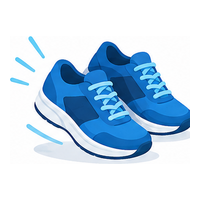
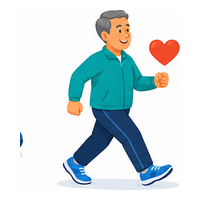
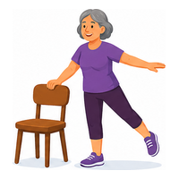
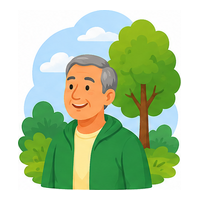

Controlar
Reducir el impacto de síntomas motores y no motores que resultan prioritarios para la persona.
Guía educativa: no reemplaza la consulta médica
Vivir con Parkinson no significa dejar de vivir. Información confiable, ejercicio, un tratamiento individualizado y una red de apoyo ayudan a mantener autonomía y calidad de vida.
Idea claveEl tratamiento se revisa y ajusta con el tiempo.

Hoy no detiene ni cura la enfermedad, pero puede controlar síntomas y sostener la vida cotidiana. No existe una combinación única.
Reducir el impacto de síntomas motores y no motores que resultan prioritarios para la persona.
Favorecer movilidad, comunicación, autonomía, trabajo, actividades y participación social.
Equilibrar beneficios, efectos adversos, seguridad y objetivos personales en cada etapa.
La levodopa es fundamental, junto con otras familias de fármacos. Dosis y horarios importan tanto como el nombre del fármaco.
Parte central del manejo: regular, desafiante y seguro. Combina trabajo aeróbico, fuerza, equilibrio y movilidad.
Kinesiología (marcha, equilibrio, fuerza); terapia ocupacional y fonoaudiología (autonomía, voz y deglución).
Para personas seleccionadas con síntomas difíciles de controlar. Requieren evaluación especializada; no son una cura.
Diagnóstico, fármacos y coordinación clínica.
Movimiento, ejercicio, marcha y equilibrio.
Autonomía, hogar, trabajo y actividades.
Voz, comunicación y deglución.
Ánimo, adaptación, cognición y apoyo.
Peso, hidratación, tránsito y comidas/fármacos.
La dosis correcta, a la hora correcta. La pauta siempre debe individualizarse.
Tratar los síntomas que más afectan función y calidad de vida, con el menor impacto adverso posible.
Edad, etapa, trabajo, otras enfermedades, cognición, sueño y preferencias influyen en la elección.
La respuesta cambia con el tiempo; registra horarios, períodos ON/OFF y efectos.
Principios del tratamiento, familias de fármacos, horarios y comidas.
Nunca cambies dosis, horarios ni suspendas un medicamento sin conversar con tu equipo tratante.
Constancia, desafío y seguridad. El programa debe adaptarse a cada persona.

Apoya marcha, amplitud, coordinación y velocidad de movimiento.

Mejora resistencia, fuerza, postura, flexibilidad y salud cardiovascular.

Entrena equilibrio, reacción y estrategias para reducir caídas.

Puede beneficiar ánimo, sueño, cognición, fatiga y participación.
Referencia semanal
Meta adaptable de actividad moderada a vigorosa, distribuida según condición física, síntomas y seguridad. Comienza desde tu nivel real y aumenta gradualmente.
Por qué importa, meta semanal de referencia y los cuatro componentes.
Idealmente, comienza con una evaluación de kinesiología con experiencia neurológica. La mejor rutina es la que es segura, suficientemente desafiante y sostenible.
No existe una dieta que cure el Parkinson. Comer bien sostiene energía, salud, digestión y tratamiento.
Comer suficiente para mantener actividad, atención y recuperación.
Aportar proteína, calcio, vitamina D y energía según necesidad.
Favorecer hidratación, fibra y regularidad intestinal.
Coordinar comidas y medicamentos cuando exista interferencia.
Objetivos, una base cotidiana y prioridades prácticas.
Si hay dificultad para tragar, baja de peso o estreñimiento persistente, conviene una evaluación profesional. Evita suplementos “milagrosos” sin revisar evidencia e interacciones.
Vivir bien también significa anticipar, adaptar y pedir apoyo a tiempo.
Reserva tus mejores momentos del día para tareas significativas o exigentes.
Divide actividades en pasos, prepara materiales y reduce la multitarea insegura.
Terapia ocupacional, kinesiología y fonoaudiología pueden proponer soluciones concretas.
Estrategias, seis áreas a observar y cómo organizar el día.
Los síntomas nuevos o cambios bruscos merecen revisión: no todo lo que ocurre en una persona con Parkinson es “por el Parkinson”.
Opciones para personas seleccionadas cuyos síntomas ya no se controlan bien con medicamentos. Requieren evaluación especializada.
Una terapia implantable y ajustable para controlar síntomas motores en personas cuidadosamente seleccionadas.
Ver detalleHIFUUna lesión cerebral precisa, realizada sin incisión ni dispositivo implantado.
Ver detalleRFUna técnica histórica que mantiene un lugar en situaciones seleccionadas.
Ver detalle